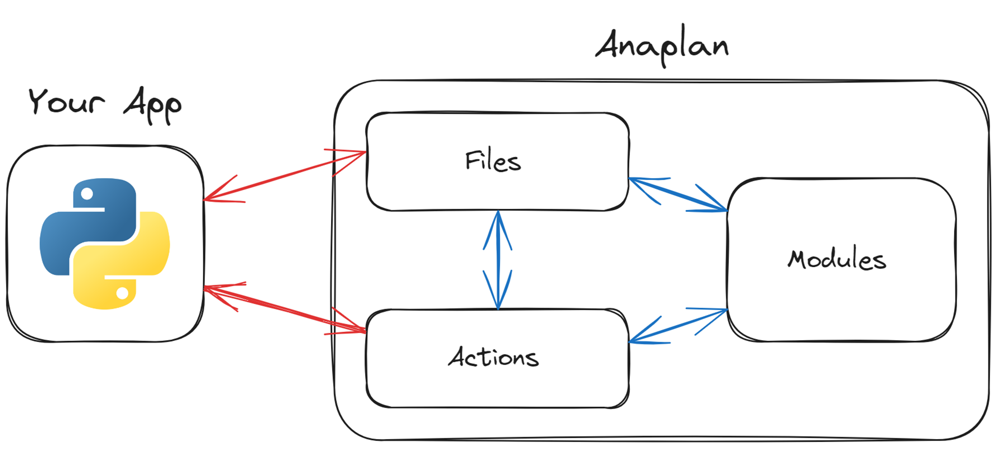

Anaplan Explained
This section tries to explain Anaplan specific concepts and design choices to Developers to enable a better understanding of the API. It is less interesting for people already familiar with Anaplan.
To understand how Anaplan handles data, you are going to have to wrap your head around some fundamental concepts, as well as gain a basic understanding of some Anaplan specific terminology. To truly understand the Anaplan API and why the dataflows and structures are the way they are, obtaining a well-founded understanding of how Anaplan handles data, is essential.
This page list tries to condense the fundamentals of using the Anaplan Bulk API. The transactional API is different in many ways. Support for the Transactional API is planned for the future but generally has way fewer applications.

Basic Concepts
- All data is exchanged through files. When uploading data, you are uploading the data to a file previously registered with Anaplan. When downloading data, you are downloading a file either registered with Anaplan or produced by an export action. Anaplan does not use (S)FTP, you will reference these files only by their ID and send or receive their content in the body of HTTP Requests.
-
Anaplan has the following type of actions:
- Imports - 112000000000 IDs.
- Exports - 116000000000 IDs.
- Processes - 118000000000 IDs.
- Other Actions - 117000000000 IDs.
-
Imports read data from a file and load it into a module. Exports conversely load data from a module to a file. The file id of the resulting file is identical to the export id. "Other Actions" move things around in Anaplan and can also delete data etc. Processes are simply a sequence of the other three.
- Invoking any Action will spawn a Task. You can then query the status of this task.
- Files are NOT Safe for concurrent access. If you want to override the content of a file while an import is being run against it, you can. Import and Export Actions, however, are. If you run an Export while an Import into a module that will affect the data of the module you are trying to export from, Anaplan will queue this task. No dirty reads.
Imports
Imports read data from a file and load it into a list or module. Only after running an Import against the file you just uploaded is the data actually "in" Anaplan. Only uploading a file will do nothing and after 48h - the lifetime for files in Anaplan - the content will simply vanish. Import Actions are quite powerful and can incur mapping of columns from i.e. a csv structure to dimensions in Anaplan, type conversion, date parsing and more. They are also quite easy to get wrong and very sensitive to change.
Exports
When you want to get some data from Anaplan, you will have to do the reverse of an Import, in two similar steps. First, you run an export and wait for the spawned task to complete. Then you can download the content of the file that was populated by the export action. The File will have the same ID as the Export Action that produced it.
Processes
A Process is just an arbitrary sequence of any kind of actions. These are useful for grouping actions that must only be run together or just represent some logical grouping. Processes can include import an export actions. When loading data to or from Anaplan with a process, you will have to find the Import or Export contained in the process, and the referenced data source in the case of an Import.